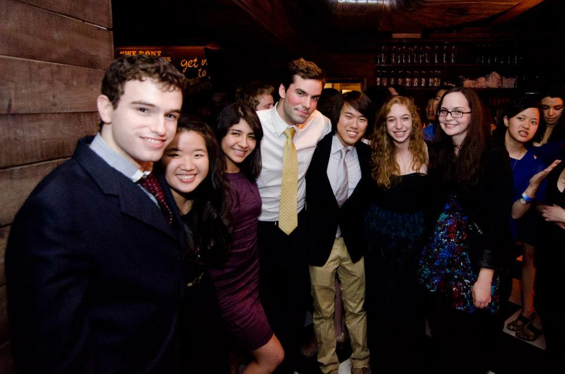

December, 2012
After much angst and deliberation, I decided to become deputy News editor, a position notorious for the amount of time it takes. It also happens to be, in my opinion, one of the most important at the Spectator, since deputies pitch and direct the content of the paper from day to day. I was beyond excited (and a little terrified) when I was selected.
I can now say it was the best decision I could have made
